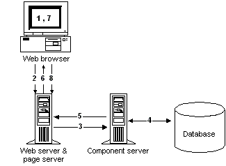

The Web DataWindow is a DataWindow that is generated for use in Web applications. The Web DataWindow offers a thin-client solution that provides most of the data manipulation, presentation, and scripting capabilities of the PowerBuilder DataWindow without requiring any PowerBuilder DLLs or plug-ins on the Web client. The DataWindow that displays in the Web browser looks very much like the DataWindow you designed in the DataWindow painter.
Web DataWindow functionality includes three types of Web DataWindow implementation:
 HTML Generation property page has been renamed Since the Web DataWindow can be generated in XML, XHTML, and
HTML, the HTML Generation property page in the DataWindow properties
view is now called the Web Generation property page. Shared XHTML
and HTML properties and properties specific to XML, XHTML, and HTML
can be set there. For information about setting Web generation properties,
see "Setting Web generation properties
for the Web DataWindow".
HTML Generation property page has been renamed Since the Web DataWindow can be generated in XML, XHTML, and
HTML, the HTML Generation property page in the DataWindow properties
view is now called the Web Generation property page. Shared XHTML
and HTML properties and properties specific to XML, XHTML, and HTML
can be set there. For information about setting Web generation properties,
see "Setting Web generation properties
for the Web DataWindow".
The easiest way to use any type of Web DataWindow involves placing a Web DataWindow design-time control (DTC) on a Web page template in a JSP target and setting Web DataWindow DTC properties such as the generation format: XML, XHTML, or HTML.
No matter what type of Web DataWindow you want to use, the way you use it is the same. For specific information about using the XML Web DataWindow, see "Using the XML Web DataWindow". For information about using the Web DataWindow DTC, see the chapter about the Web DataWindow design-time control in the Working with Web and JSP Targets book and "Setting Web DataWindow design-time control properties".
The Web DataWindow uses a component running in a transaction server (such as EAServer or COM+) cooperating with a dynamic page server (such as Microsoft Active Server Pages in IIS or Java Server Pages in Tomcat) and communicating with a Web client by means of a Web server. No PowerBuilder DLLs or plug-ins are required on the Web client.
The built-in Web DataWindow component is the HTMLGenerator90 component that is preinstalled in EAServer 5.x. The component is used to generate the JavaScript and the HTML; XHTML; or XML, XSLT, CSS, and XHTML, depending on the type of Web DataWindow you are creating. You can also use a custom component that you develop instead. For more information, see "The Web DataWindow server component and client control" on page .
A DataWindow COM component can also be called directly from ASP without a transaction server, but using a transaction server usually provides better performance because database connections and instances of the component can be pooled or cached.
 Disabling instance pooling when deploying Web DataWindow
targets Instance pooling allows transaction server clients to reuse
component instances and so improves server performance by eliminating
the resource drain caused by repeated allocation of component instances.
Instance pooling is turned on by default for the HTMLGenerator105
component in EAServer. This prevents you
from deploying a target that uses the component a second time without stopping
and restarting the server. During development, you might want to
turn instance pooling off. For information on changing the pooling
property of a component, see your server documentation.
Disabling instance pooling when deploying Web DataWindow
targets Instance pooling allows transaction server clients to reuse
component instances and so improves server performance by eliminating
the resource drain caused by repeated allocation of component instances.
Instance pooling is turned on by default for the HTMLGenerator105
component in EAServer. This prevents you
from deploying a target that uses the component a second time without stopping
and restarting the server. During development, you might want to
turn instance pooling off. For information on changing the pooling
property of a component, see your server documentation.
Figure 6-1 shows you graphically (in eight steps) what happens when a user accesses a Web page containing an XHTML or HTML Web DataWindow.

The numbers 1 through 8 in the figure correspond to the events that occur after you develop and deploy a Web DataWindow and a user accesses a page containing the Web DataWindow:
The Web DataWindow has two main components: the server component and the client control.
The Web DataWindow server component retrieves data from a database and returns JavaScript and XSLT, XHTML, or HTML that represent the data and the DataWindow object definition to the page server. The server component is a PowerBuilder custom class user object that uses a DataStore to handle retrieval and updates and is deployed as an EAServer or COM component. You can use the generic component provided with PowerBuilder or a custom component.
The generic EAServer component, HTMLGenerator90, is preinstalled in EAServer in a package named DataWindow. PowerBuilder also provides a generic COM component called PowerBuilder.HTMLDataWindow that you can register and use with COM+ or EAServer. The COM component is in the file PBDWR105.DLL. For information about using the COM component, see "Server configuration requirements".
 Using an older version of the generic component Earlier versions of the generic HTMLGenerator component are
also installed in the EAServer DataWindow
package. Because EAServer supports
multiple PowerBuilder VMs, you can continue to run older Web DataWindow applications
that use this component.
Using an older version of the generic component Earlier versions of the generic HTMLGenerator component are
also installed in the EAServer DataWindow
package. Because EAServer supports
multiple PowerBuilder VMs, you can continue to run older Web DataWindow applications
that use this component.
The generic component has methods that you call in your Web page template to instantiate and configure the component. The generic component also provides most of the methods available on the PowerBuilder DataWindow control. You should probably use the generic component when you are getting started with the Web DataWindow. Later you might want to build and deploy a custom component that uses the methods of the generic EAServer component interface or that uses only the methods you design for the component. For information, see "Using a custom server component".
The following table describes all the types of Web DataWindow server components and their supported platforms:
Embedding client-side scripts The Web DataWindow client control is the JavaScript plus XML, XSLT, and CSS; the JavaScript plus XHTML; or the JavaScript plus HTML that is generated by the server component and embedded in the page returned to the Web client. Client-side scripts that you add to your Web page template and wrap in SCRIPT tags are embedded as JavaScript in the client control.
JavaScript caching Some features available on the client control are optional: events, methods, data update and validation, and display formatting for newly entered data. The size of the generated JavaScript increases as you add more client-side functionality. You can cache client-side methods in JavaScript files on your Web server to reduce the size of the markup generated for Web DataWindow pages and, if the browser is configured to use cached files, improve the performance on the client machine.
For information about enabling JavaScript caching, see "Using JavaScript caching for Web DataWindow methods". You can find additional information about client-side caching, HTMLGen properties, and other generation properties in the DataWindow Reference .
Using client-side events Events that are triggered on the client control and several of the client control methods do not require the server component to reload the page, so processing on the client is typically much faster than processing performed on the server.
For more information about enabling features on the client, see "Web DataWindow properties" and "Controlling what is generated ". For more about writing scripts, see "Writing client-side scripts".
For complete documentation of the events and methods available on the server component and the client control, see the DataWindow Reference or the PowerBuilder online Help.